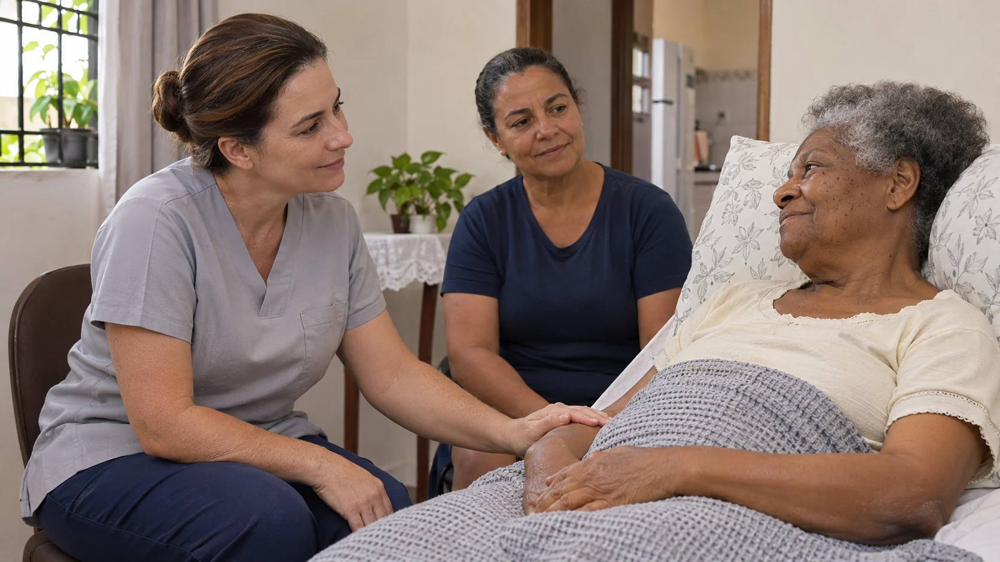

Cuidados Paliativos

La información del curso está pendiente de confirmación institucional. Las inscripciones no están abiertas.
Plan de estudios
Pendiente de confirmación por Metodista.
Duración y clases
Pendiente de confirmación por Metodista.
Inversión
Pendiente de confirmación por Metodista.
Preguntas frecuentes
¿Dónde encuentro los detalles de los cursos?
Cada tarjeta del curso abre los accesos al plan de estudios, duración, inversión y equipo docente.
¿Las inscripciones están abiertas?
La inscripción, el aviso de admisión, las plazas y el calendario oficial están pendientes de confirmación.
¿La campaña de becas está disponible?
La beca del 20% es una propuesta ilustrativa y no está vigente.